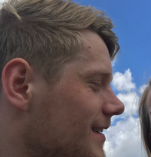

---
# Feel free to add content and custom Front Matter to this file.
# To modify the layout, see https://jekyllrb.com/docs/themes/#overriding-theme-defaults
layout: home
---
<div class="container">
  <div class="about-wrapper">
    <div class="portrait-about">
      
    </div>
    <div class="chat-bubble">
      <h2 class="upper-space-big">Hi 👋</h2>
      <h1>
        <span class="typer" id="some-id" data-delay="80" data-delim=" || " data-deleteDelay="500"
          data-words="I'm @josdyr || I'm Jostein"
          data-colors="#ecebeb">
        </span>
        <span class="cursor" data-cursorDisplay="_" data-owner="some-id"></span>
      </h1>
    </div>
    <div class="triangle">
    </div>
  </div>
  <div class="about-text">

    <!-- AI / machine learning, deep learning, reinforcement learning, Q Learning / Deep Q Network, agents, simulation -->

    <!-- Qualification -->
    <p>
      I've recently graduated with a Batchelor of Science in Computer Science with Honours from Edinburgh Napier University. My dissertation looked at Machine Learning, more specifically deep learning and reinforcement learning. It concluded that using neural networks were quicker than the more traditional Q Learning Algorithm. You can read more here <a class="yellow-inline-link" href="/jostein_dyrseth_dissertation_2019.pdf">here</a>.
    </p>

    <!-- Passion -->
    <p>
      My passion is for Data Science and Machine Learning. I wish to connect and work with wonderful people, like you! Thanks for visiting my website, and feel free to get in touch with me! ☎️
    </p>

    <!-- Habbies / Interests -->
    <p>

    </p>

  </div>
</div>
